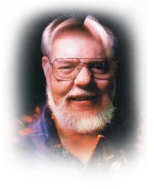

ДЕЙВ АРНЕСОН
 Дэвид Лэнс Арнесон (англ. David Lance Arneson, 1 октября 1947 года — 7 апреля 2009 года) — американский игродел, прославившийся благодаря работе совместно с Гэри Гайгаксом над первой изданной настольной ролевой игрой, Dungeons & Dragons, в начале 1970-х. D&D Гайгакса и Арнесона оказала сильное влияние на развитие ролевых игр, и многое из того, что сейчас считается традициями и клише — поиск приключений в подземельях, должность ведущего как нейтрального арбитра и прочее, — произошли именно оттуда.
Арнесон увлёкся варгеймами в 1960-х, ещё будучи подростком. В 1968 году, во время обучения в университете Миннесоты, на конвенции варгеймеров GenCon он познакомился с Гайгаксом. В 1970 Арнесон придумал вымышленный мир в стиле псевдосредневековой фэнтези, который позже стал называться Blackmoor, и написал для него собственные игровые правила. На следующем GenCon Арнесон показал игру Гайгаксу, и они совместно разработали набор правил, который позже стал называться Dungeons & Dragons. В 1974 году игра была опубликована компанией TSR, в которой Арнесон работал непродолжительное время. Работу над своим сеттингом Greyhawk Гайгакс начал непосредственно после того, как поиграл в блэкмурском модуле у Арнесона.
Арнесон оставил TSR в 1976 году, а в 1979 году подал иск на TSR, чтобы сохранить авторские права и соотвествующие выплаты за D&D. Всего таких исков последовало ещё четыре штуки, и окончательно проблема разрешилась только в 1997, когда Питер Эдкисон, основатель Wizards of the Coast, сумел раз и навсегда договориться с ним после покупки TSR — именно после этого из названия флагманской ролевой системы пропала приставка «Advanced». Всё это не помешало Арнесону в 1980-х сотрудничать с TSR некоторое время, издав через них четыре модуля серии DA: «Adventures in Blackmoor», «Temple of the Frog», «City of the Gods» и «The Duchy of Ten». Как только Гайгакс был вынужден уйти из TSR, проект упрочнения связи Блэкмура с D&D был заморожен, пятый модуль так и не увидел свет, и Арнесону больше так и не выпало шанса работать с Гайгаксом. Возможно, пятым запланированным модулем был «The Garbage Pits of Despair», опубликованный в журнале Different Worlds в 1986 году.
После ухода из компании Арнесон продолжил работу в качестве независимого игродела, участвовал в разработке компьютерных игр и преподавал гейм-дизайн в университете Full Sail University. Читаемый им курс назывался «Правила игры» и посвящался тому, как создавать книги правил, балансируя между описаниями того, над чем должны думать игроки и того, что должны делать персонажи. Арнесон продолжал водить ролевые игры вплоть до своей смерти.